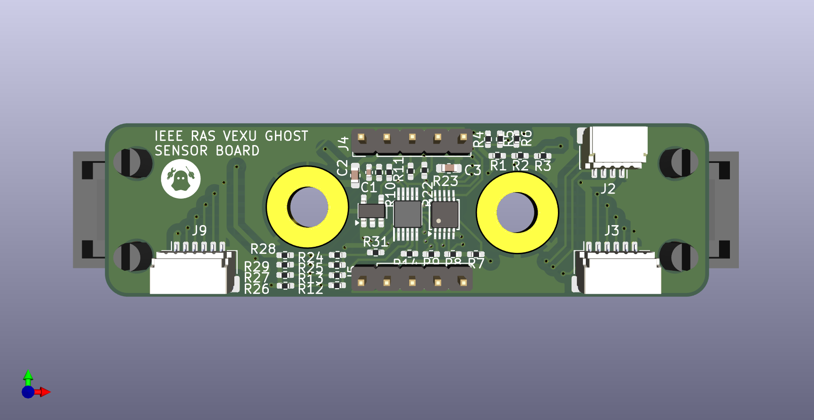
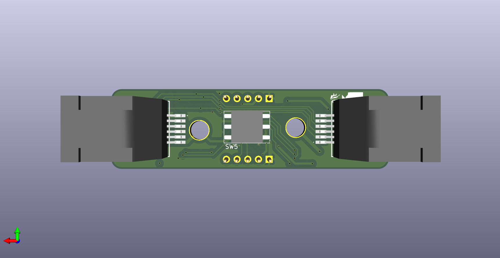
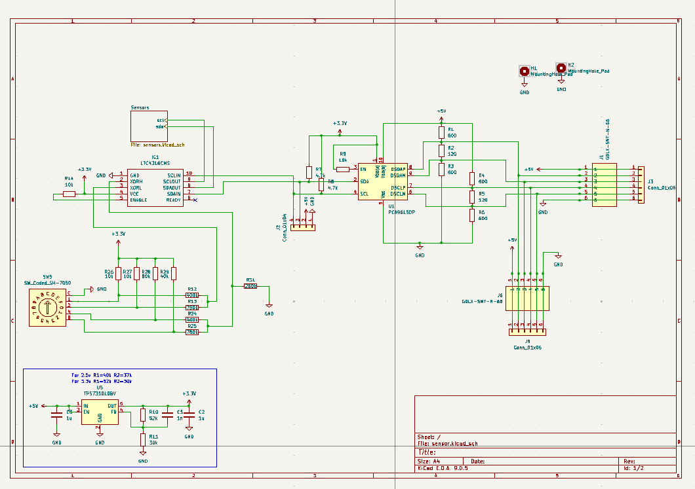
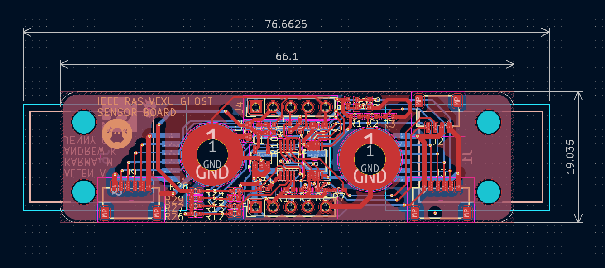

I designed a base sensor deployment board in KiCad for the robotics team VEXU GHOST to connect and deploy different sensor modules, such as color sensor, distance sensor, and IMU, as well as I2C GPIO expander modules for limit switching. GHOST’s robots utilize large number of sensors to achieve various functionalities, and this is our solution to try integrating sensor clusters with faster clock speeds, better signal integrity, and scalable cost efficiency. The board is part of a larger implementation of sensor integration using a custom hardware architecture with daisy-chaining differential I2C. The design utilizes a PCA9615DP differential I2C bus buffer, LTC4316 I2C address translator (for unique I2C addresses among identical sensors), and a 16-bit DAC with a rotary switch for the address translation. I optimized the layout and components so that the board follows the robot’s mounting size constraint and have less manufacturing costs (reduced by 20% compared to previous iterations). I also collaborated with other hardware members to assemble the boards through reflow soldering and microsoldering, as well as testing the boards to ensure valid electrical connections. Currently, we are programming a data acquisition firmware in C++ that is configurable to ROS2 publihing nodes to poll sensor data from deployment boards and send it to the Jetson Orin Nano via USB serial in order to process the sensor information for our robot's automation.
VEXU GHOST PCB Github Repository

